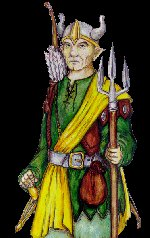

МЕСТНЫЙ ЖИТЕЛЬ
AGRAEL

| Раса: |
Эльф |
| Пол: |
Мужской
|
| Профессия: |
Рейнжер |
| Align: |
Lawful-Good |
| Клан: |
Knights |
| Религия: |
Enki, God of Knowledge |
Один из старейших эльфов-рэйнжеров, полжизни бродил по диким лесам. Всем,
что узнал, а узнал немало, поделился с Учителем, чтобы он научил и других.
Устал бродить, захотелось чего-нибудь постоянного. Друзья-Охотники звали
присоединиться к ним, но не пошел. Опять по лесам мыкаться, а ведь уже не
молод. Пусть молодежь теперь наводит ужас на недругов, поджидая их в лесах
и не давая покоя ни днем, ни ночью. :)
И тут узнал про Рыцарей. Пришел к ним, и взяли с превеликой охотой. Долго
ли, коротко, а стал Аграэль-рэйнжер смертным лидером клана. Взмолился он
к богам, и помогли ему боги укрепить твердыню Рыцарей и научить простых
воинов сражаться, как подобает Паладинам, Защитникам Справедливости. И
встали рука к руке и воины, и паладины, и самураи, и монахи. Но это уже
другая история...